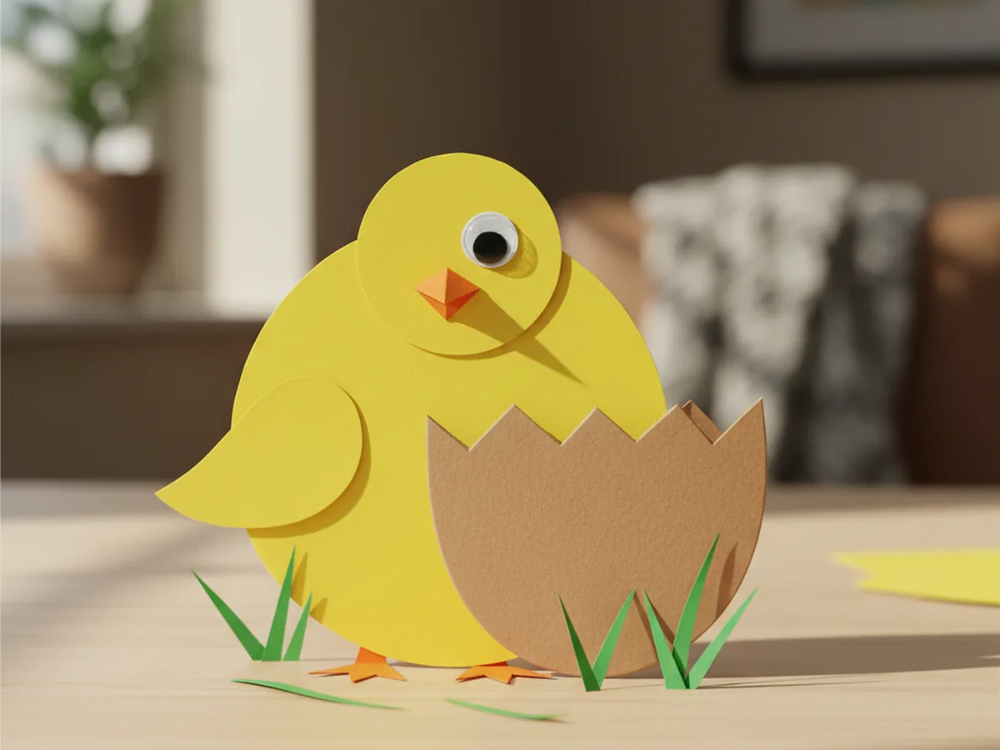
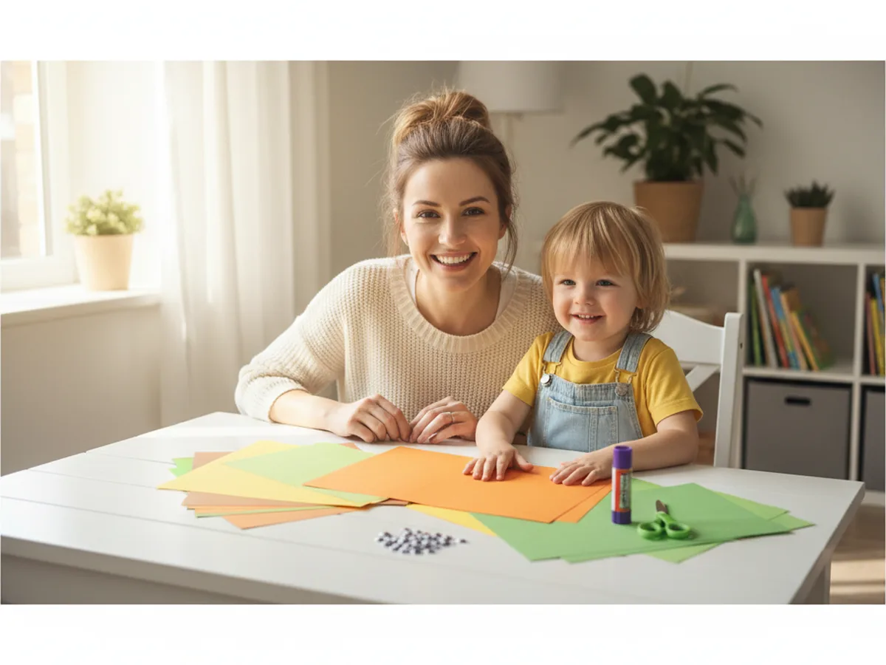
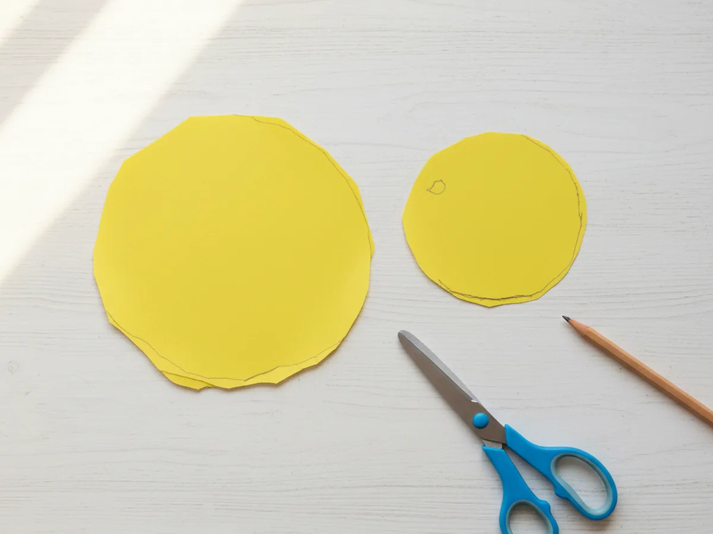
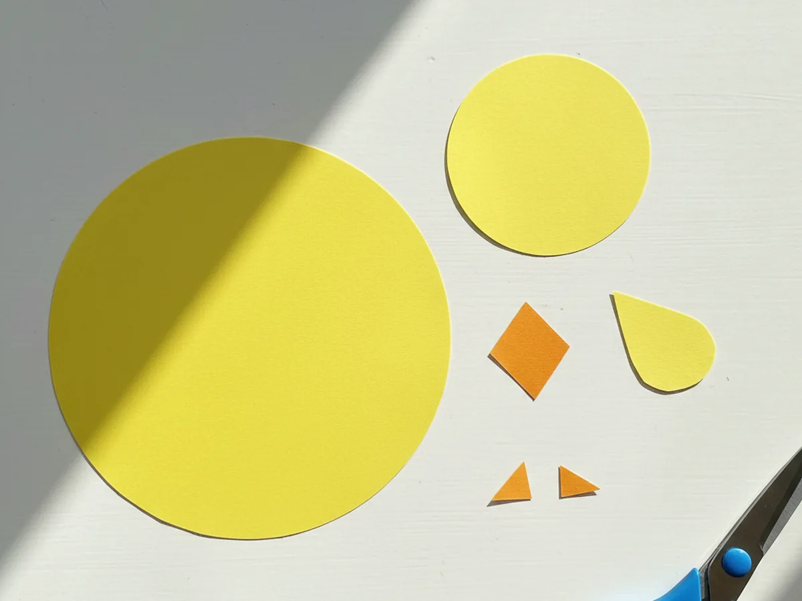
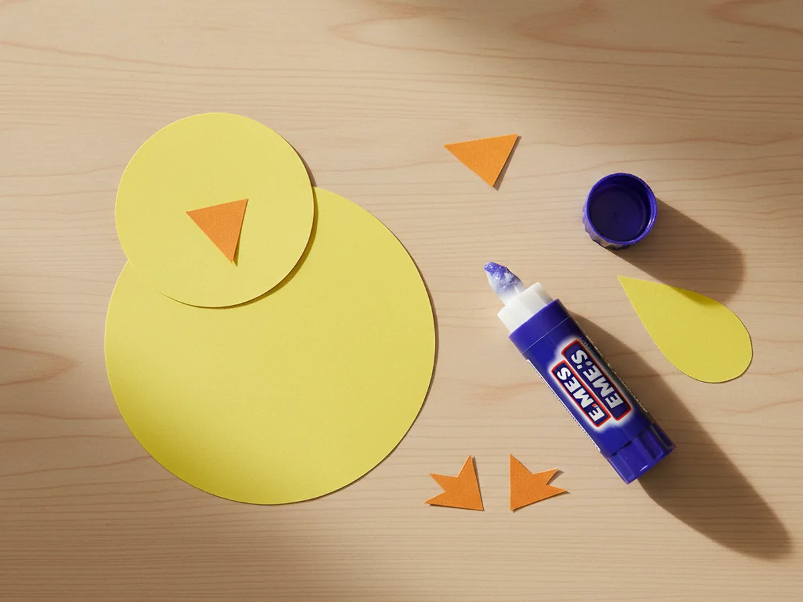
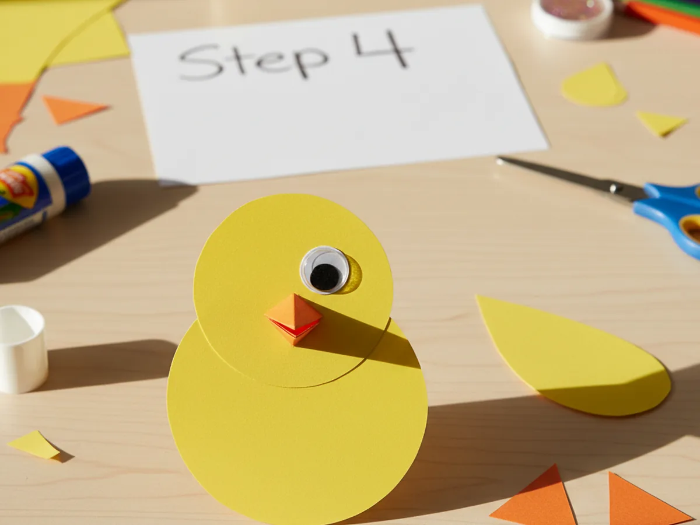
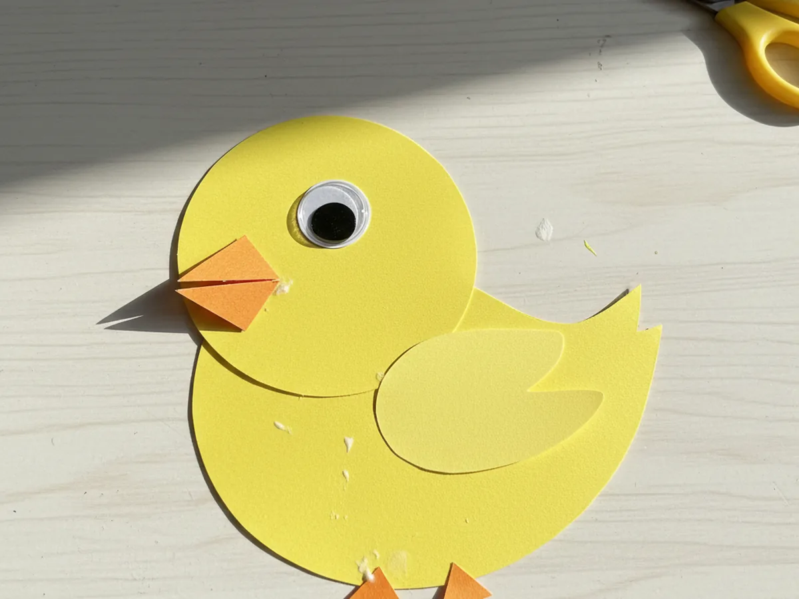
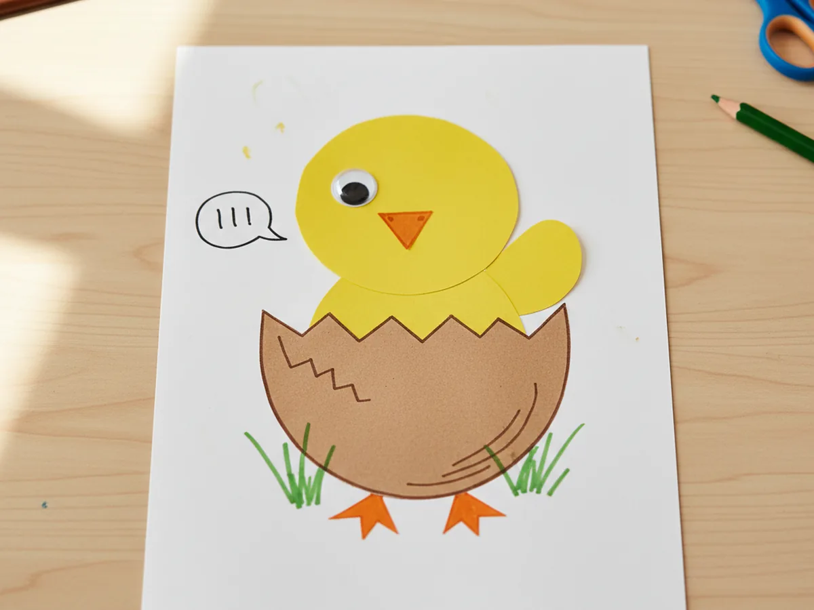

There is something extra sweet about a tiny yellow chick popping out of a paper egg on a sunny spring afternoon. This paper chick craft is one of those gentle low-stress projects that comes together in about twenty-five minutes with shapes so simple even a brand new little crafter can manage. A few rounded snips, a swipe of glue, and your child has made the cutest fluffy spring friend you will both want to keep on the fridge for weeks. 🐣
The best part is that this easy paper chick craft is wonderfully forgiving. A slightly wobbly circle still looks adorable. A tilted beak just makes the chick look more curious. If your little one is just learning to handle scissors, this is exactly the kind of cozy craft where you can both relax and giggle through the process together.
Why Kids Love This Craft
Children adore this paper chick craft because the chick takes shape in only a few minutes. Right after the first round body is cut, they can already picture the little chick standing on the table, and that quick visible progress keeps them excited from start to finish. There is no waiting, no drying time between steps, and nothing complicated to assemble.
This chick paper craft is also wonderful for building real fine motor skills. Cutting curved shapes teaches your child to slowly turn the paper while snipping, which is one of the most important early scissor skills. Folding the small beak builds finger precision, and pressing the feet into place develops the same hand strength they need for buttons, pencils, and zippers. Even a three year old can do most of this simple paper chick craft with a little friendly help from mom.
And then comes the moment that makes the whole craft worth it. As soon as the eye and beak are on, the chick suddenly has a personality. Your child will start chirping, naming it, hopping it across the table, and tucking it back into its little paper egg. That sweet stretch of imaginative play is what turns this cute chick craft into a real shared moment instead of just a quick activity. 💛

What You'll Need
Here is everything you need to make this paper chick craft at home. I like to lay all the supplies out on the table first so my little one can sit down and dive right in.
- Crayola Construction Paper (240 sheets, 12 colors), the perfect set for a yellow chick, an orange beak and feet, a brown eggshell, and green grass.
- Elmer's Disappearing Purple Glue Sticks (30 pack), washable and easy for tiny fingers to twist up and apply.
- Fiskars 5 inch Blunt Tip Kids Scissors, the right safe size for cutting the gentle curves of this craft.
- Googly Wiggle Eyes Self Adhesive (500 pcs assorted), the quickest way to give your chick a sweet expressive eye in seconds.
- Crayola Broad Line Markers (10 classic colors), for drawing tiny details like an eye, eggshell cracks, or little chirping marks.
- METERXITY Multicolor Pom Poms (500 pack), optional but lovely for adding a fluffy texture or making a 3D chick variation.
- A pencil for sketching shape outlines and a piece of cardstock or scrap paper to display the finished chick.
Step-by-Step Instructions
This paper chick craft walks through six gentle steps that flow naturally from cutting to gluing to scene building. Take your time and let your child do as much as they comfortably can.
Step 1: Cut the Body and Head Shapes
Start by lightly sketching a large round shape on yellow construction paper for the chick's body, about the size of your child's open palm. Then sketch a smaller round shape on another part of the same yellow sheet for the head, roughly the size of a clementine. Cut both circles out with kid scissors. The lines do not need to be perfect, soft and rounded looks beautifully chick-like.

Step 2: Cut the Beak, Wing, and Feet
From an orange sheet of construction paper, cut a small diamond shape about the size of a quarter for the beak, plus two tiny orange triangles for the feet. Then go back to the yellow paper and cut a small teardrop or oval shape for the wing, roughly a third the size of the body. Lay all the little pieces out next to the body and head so your child can see the chick coming to life shape by shape.

Step 3: Glue the Head onto the Body
Pick up the large yellow body circle and place it on the table. Add a generous swipe of glue stick to the back of the small round head, then press it onto the top of the body, letting the head slightly overlap the body curve. That little overlap is what makes the chick look like one snuggly creature instead of two floating circles.

Step 4: Add the Beak and Eye
Fold the small orange diamond gently in half so it forms a triangle with a soft crease down the middle, just like a real chick beak. Glue the folded edge onto the front of the head so the beak points outward. Then peel a googly eye and stick it just above the beak. If you do not have googly eyes, draw a simple round eye with a black marker. Suddenly the chick has a tiny face, and that is always the moment kids gasp and giggle.

Step 5: Add the Wing and Feet
Take the small yellow teardrop and glue it onto the middle of the body as the wing, slightly tilted upward so it looks like the chick is flapping with happiness. Then glue the two orange triangle feet at the bottom edge of the body, with just the points peeking out from under the chick so it looks like it is standing tall. Press everything firmly so nothing slides while the glue sets.

Step 6: Add the Eggshell and Spring Scene
From a sheet of brown or speckled construction paper, cut a half oval shape with a wavy zigzag top to look like the bottom of a cracked eggshell. Glue it onto a piece of white cardstock as the base, then glue the finished chick right behind it so the chick looks like it is hatching out of the egg. Snip a few thin green paper grass blades along the bottom, and use a marker to add tiny cracks on the eggshell or a little chirp mark near the beak. Your paper chick craft is finished and ready to show off. ✨

Variations to Try
Fluffy Pom Pom Chick: Skip the paper body and instead glue a large yellow pom pom onto cardstock as a 3D chick body, then add the paper beak, feet, wing, and googly eye on top. This sensory-friendly version is especially lovely for toddlers who enjoy the soft fluffy texture.
Hatching Easter Card: Mount the chick and eggshell onto a folded sheet of pastel cardstock so the eggshell flap lifts up to reveal the chick. Write a sweet message inside and you have a handmade Easter card the grandparents will want to keep forever.
Mama Hen and Chicks Scene: Make one big white or brown paper hen using the same shapes scaled up, then surround her with two or three little yellow chicks. Glue them all onto a green paper field for a sweet farmyard story your child can play with after the craft is done.
Final Thoughts
This paper chick craft is one of those quiet little projects that asks for almost nothing in supplies and gives back the brightest happy smile from your child. The cutting, gluing, and scene building all unfold at such a gentle pace, which makes it a wonderful Easter morning activity, a cozy spring afternoon project, or a sweet way to celebrate a new baby in the family. Whatever you do with the finished chick, your little one will remember the moment you made it side by side.
If your child finishes their first paper chick, save this article on Pinterest so other craft-loving mamas can find it easily. Happy crafting! 🌼
More Crafts You'll Love
If your child loved this paper chick craft, they will adore these other sweet spring projects too: